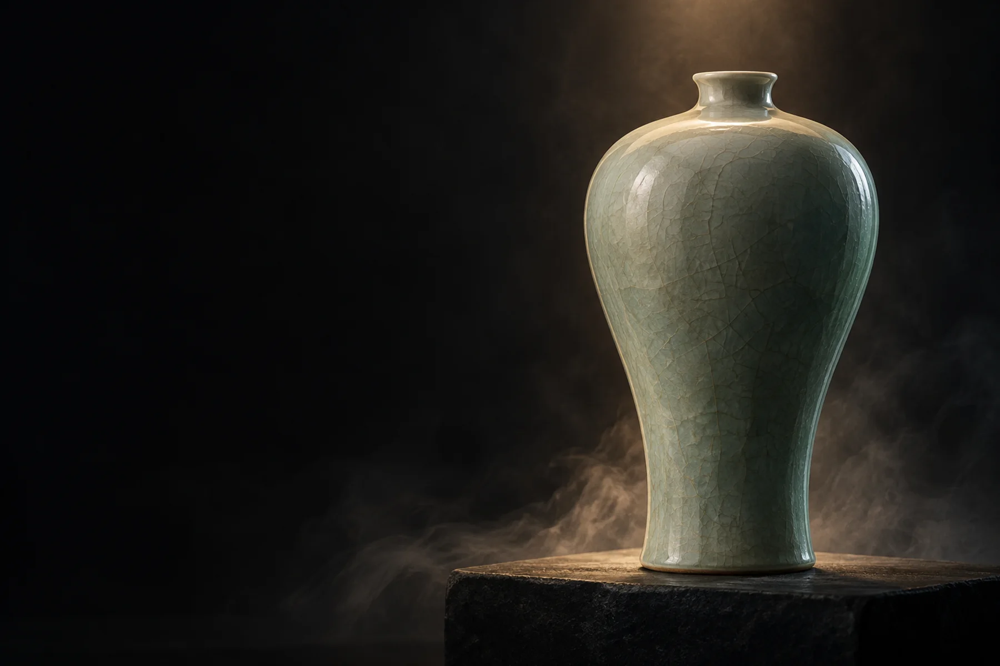

向下，循迹而行
龙泉青瓷 · 梅瓶器物意象 / AI 创作
叁 / 土苏绣
江苏 · 苏州
东阳木雕
浙江 · 东阳
龙泉青瓷
浙江 · 龙泉
景泰蓝
北京
循一条线，见四种匠心
在展馆相遇四时百工
材料各有性情，手艺自有回声。

让每一次相遇，成为传承的开始。
纹脉 · 百工录
龙泉青瓷 · 梅瓶器物意象 / AI 创作
叁 / 土江苏 · 苏州
浙江 · 东阳
浙江 · 龙泉
北京
材料各有性情，手艺自有回声。
让每一次相遇，成为传承的开始。
纹脉 · 百工录